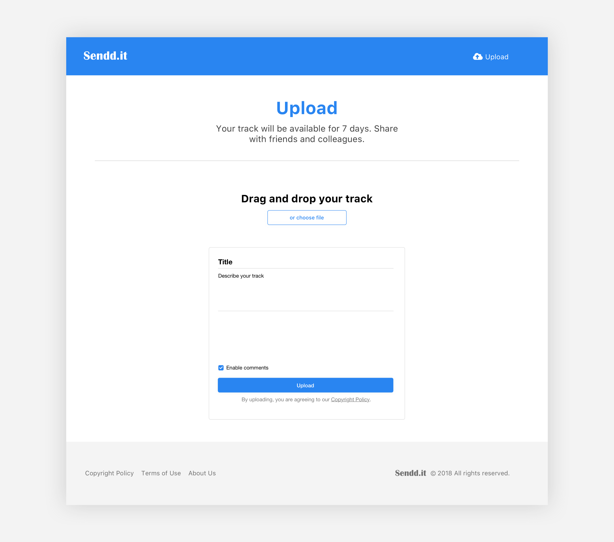

Keith Chen
<musician/><coder/>
About
Born in Fujian, China and raised in Singapore, Keith Chen is a musician and coder. He is currently in his final semester pursuing a Bachelor’s Degree of Music in Film Scoring at Berklee College of Music in Boston, MA.
moreProjects
Short Pieces
FilmDecember 2018 - Present
Pouring Rain
The Oceanmaker
The Desert
A Silent Moment
A short aleatoric and minimalist piece for a rescoring project of 400 Days.
Video Game Scoring Assistant, Berklee College of Music
codeJan 2019
Currently working on creating and improving content for the Video Game Scoring minor at Berklee. Work includes using Unity/C#, Wwise, JavaScript, and other technologies to enrich the curriculum, as well as building internal solutions.
Some links:
Berklee Games on GitHub
jsonld2md: tools to convert data
for
internal
use.
How To Train Your Dragon
Film
Soundtracks from a rescoring of How To Train Your Dragon.
World Crafts Council Anxi County Application Conference
interpretingAug 2018
A conference between WCC officials, China Arts and Crafts Association, Anxi County (Fujian, China)
government personnel to discuss the application of Anxi as a WCC Crafts City.
Speakers included WCC-Asia Pacific Region executive board
members Kevin Murray, Edric Ong, Richard Engelhardt, as well as Zhou Zhengsheng, Tong Xiaoning, and
other representatives from China Arts and Crafts
Association.
The interpreters, Keith Chen and Wang Bing, also translated over 20,000 words worth of government handbooks
and cultural material for the cause.
Sendd.it
codeMarch 2018 - Present
Currently working on an open source music project, Sendd.it, with Benjamin Pelletier from the University of Waterloo. Sendd.it is a no-signup, drop & go, audio sharing solution for instant playback and feedback, built for musicians. Sendd.it is designed to improve the intermediate stage of creative processes with musicians or anyone who works with audio.
John Pierce Big Band Recital
performanceDecember 2017
A recital with Berklee professor, jazz trombonist and bassist John Pierce's 10-Piece ensemble, at Berklee's David Friend Recital Hall. The group performed iconic tunes arranged for big band and octet by Dave Pell, Benny Golson, Horace Silver, Bill Evans, and so on.
watch videoChina-UK Education Cooperation & Exchange Meeting
interpretingJuly 2017

A conference and round-table event between Chinese and British educators, exchanging education strategies and key policies. Speakers included British educator and author, Dr Martin Stephen. Keith worked as lead Chinese-English simultaneous interpreter for this live televised event in Quanzhou, Fujian, China.
view pressBlue Planet
FilmApril 2018
A short cue scored for the ending scene of NASA's 1990 documentary, Blue Planet.
Berklee College of Music
educationAugust 2016 - May 2019
Candidate for Bachelor of Music in Film Scoring.
Scholarship recipient.
Dean's
List.